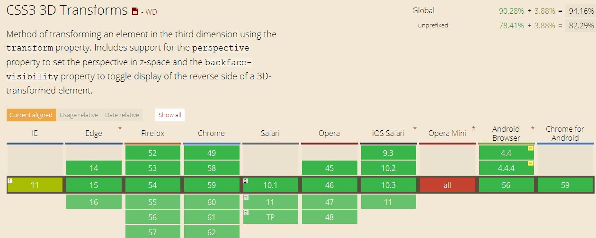

1.文字换行
word-wrap: break-word;
甚至IE5.5都可以用
This paragraph contains a very long word: thisisaveryveryveryveryveryverylongword. The long word will break and wrap to the next
这个特别长的词，如果不是用word-wrap: break-word;
这个没有空格的词就会溢出到框外。
这种事经常出现在链接中，所以用a做例子
css:
a{
display: block;
word-wrap: break-word;
border: 1px solid black;
width: 10em;
}
2.first-line伪元素
会随着视口自动变化，渲染第一行样式。
3.translate 过渡
四个属性：
需要过渡的CSS属性名称:transition-property
过渡效果持续时间:transition-duration
过渡期间速度变化（ease\linear...）t:ransition-timing-function
过渡开始前延迟时间:transition-delay
可以简写，但是如果分开来写，就可以定义不同属性的不同更持续时间等
可以设置
*{
transition:all 1s
}
如果设置了媒体查询，在改变浏览器大小的时候，就会有很棒的效果出现啦
4.transform 变形 2D 3D
在safari中需要设置display:block才有效
2D效果有5个属性
scale缩放元素transform:scale(1.5)
translate在屏幕上移动元素，第一个值是从左到右一定的距离，第二个为从上到下移动的距离，常规单位都可以用，也可以使用负值transform:translate(1.5%,1.5%)
rotate按照一定角度旋转元素transform:rotate(30deg)
skew沿X河Y轴对元素进行斜切transform:skew(10deg,2deg)
matrix：允许以像素精度来控制变形效果（可以综合以上属性）
transform-origin属性：控制变形起点transform-origin:20% 20%
3D效果很复杂，只能举一个例子
给父元素设置一个perspective:200
再给子元素设置transform-style:preserve-3d
再给带有伪类hover的子元素设置transform:rotateY(180deg)
著名的CSS属性可用性查询网站caniuse结果
5.animation动画效果
先写个关键帧规则
@keyframes color {
from{
background-color: rgb(37,39,87);
}
50%{
background-color: rgb(16,17,38);
}
to{
background-color: rgb(37,39,87);
}
}
需要的元素自己引用
.works div{
animation: color 3s infinite ease-in-out;
}
有7个独立动画属性值，但是也可以简写
animation-name 规定需要绑定到选择器的 keyframe 名称。。
animation-duration 规定完成动画所花费的时间，以秒或毫秒计。
animation-timing-function 规定动画的速度曲线。
animation-delay 规定在动画开始之前的延迟。
animation-iteration-count 规定动画应该播放的次数。
animation-fill-mode:属性规定动画在播放之前或之后，其动画效果是否可见
animation-play-state：可以控制动画的播放和暂停running paused
animation-fill-mode属性的几个值
none 不改变默认行为。
forwards 当动画完成后，保持最后一个属性值（在最后一个关键帧中定义）。
backwards 在 animation-delay 所指定的一段时间内，在动画显示之前，应用开始属性值（在第一个关键帧中定义）。
both 向前和向后填充模式都被应用。
最新评论
目前还没有评论